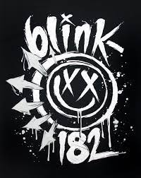

Blink-182-американская панк-рок-группа, была основана в

1992 году гитаристом и вокалистом Томом Делонгом, бас-гитаристом и вокалистом
Марком Хоппусом и барабанщиком Скоттом Рэйнором в северном
пригороде Сан-Диего, городе Пауэй, Калифорния. Группа добилась большого
успеха в 1999 году после выпуска альбома Enema of the State, достигшего
9 позиции в хит-параде Billboard 200 и ставшего мультиплатиновым.
Следующему альбому группы — Take Off Your Pants and Jacket (2001) —
удалось занять первую строчку рейтинга в США, Канаде и Германии. Пятый
одноимённый альбом группы (2003) ознаменовал собой сдвиг в творчестве группы,
привнесший в поп-панк-звучание группы некоторые несвойственные этому стилю
экспериментальные элементы.
Наравне с легко запоминающимися, навязчивыми мелодиями, группа известна
своим сатирическим, иногда даже профанационным, «туалетным» юмором. В музыкальном
плане группа исполняет преимущественно ритмичные песни с преобладающими
созвучиями мажорных аккордов. Тексты песен чаще юмористические и оптимистичные.
Общие лирические темы включают любовь, семью, друзей и отношения. Более подробно
это включает в себя «бесцельность подростков, разбитые сердца и общее
замешательство в отношении ухода за девушками». Тексты песен в синглах,
таких, как «What's My Age Again» говорят о таких вещах, как возраст и взросление,
в то время как более серьезные композиции, такие, как «Stay Together
for the Kids», касаются вопросов развода. Делонг сказал в интервью
1999 года, что цель состоит в том, чтобы оставаться искренним и относительным,
отмечая, что группа очень серьезно относится к своей лирике. Несмотря на это,
в ранние периоды творчества группа была известна использованием т.н.
«туалетного юмора» (как, например, на альбоме Take Off Your Pants and Jacket).
По мере того, как участники группы становились старше, лирические темы стали
отражать реалии взрослой жизни, в том числе проблемы отношений, ежедневное
давление и неожиданные трудности, наиболее важные элементы данных тем
были раскрыты на безымянном альбоме[38]. На альбоме Neighborhoods,
более темный лиризм продолжается: темы, касающиеся депрессии, наркомании,
потери и смерти, были вдохновлены авиакатастрофой, едва не унёсшей жизнь
барабанщика группы Трэвиса Баркера и смертью продюсера Джерри Финна.
Точкой отсчёта в зарождении группы можно считать начало 90-х, когда Тома
Делонга исключили из школы Пауэй Хай Скул. Он был уличён в пьянстве во время
школьного баскетбольного матча. После того, как его перевели в другую школу,
он встретил Энн Хоппус, сестру Марка Хоппуса, которая познакомила Делонга со
своим братом. В день, когда двое будущих основателей группы познакомились,
они катались на скейтбордах с друзьями на парковочной зоне рыночной площади,
и Хоппус, чтобы произвести на Делонга впечатление, залез на фонарный столб
и спрыгнул с самого верха, повредив обе пятки. Марк и Том поняли, что между
ними есть что-то общее и в тот же вечер организовали группу под названием
«Duck Tape». Название Duck Tape в скором времени было заменено на Blink.
В качестве барабанщика Делонг позвал 14-летнего Скотта Рэйнора, с которым
он познакомился на вечеринке.
В мае 1993 года Blink выпустили демо-кассету под названием Flyswatter,
записанную в спальне их барабанщика, Скотта Рэйнора. Это был их первый
альбом, он был записан на четырёхдорожечный магнитофон, результатом чего
стало ужасное качество звука, и, благодаря Хоппусу, было выпущено
всего лишь около пятидесяти копий. Их первое настоящее выступление
прошло в баре и, так как они были несовершеннолетними, им разрешили
войти туда только на время их выступления. Они купили 50 билетов на продажу,
но никто не пришёл на них посмотреть. После всего лишь одной песни Blink
выгнали со сцены и из бара. До конца года группа выпустила ещё одну
демо-кассету, известную как Buddha. Около 1 000 копий было выпущено
компанией Filter Records (владельцем которой был босс Хоппуса).
В начале 1994 года Blink выпустила свой дебютный полноценный альбом,
Cheshire Cat, на Grilled Cheese Records. Альбом содержал много новых
версий песен с демо-кассеты Buddha.
В скором времени после выпуска Cheshire Cat группе
Blink стала угрожать судебным иском электронная группа из Ирландии с
таким же названием. Чтобы избежать затяжного судебного процесса, Blink
добавили в конец названия группы цифры «182». Существует несколько мнений
о том, почему именно эти цифры в конце концов были выбраны. Например,
что их число соответствует числу раз, которое Аль Пачино произносит
слово «fuck» в фильме «Лицо со шрамом» (эта версия была высказана Марком
Хоппусом, как объяснение данному числу, в интервью австралийскому кабельному
телеканалу), что число было навеяно фильмом Тимоти Хаттона 1985 года выпуска,
Turk 182!, что это представление участников группы об идеальном весе
Хоппуса, или что они изобразили положение в алфавите букв 'R' и 'B,',
ссылаясь на северный пригород Сан-Диего, Ранчо Бернардо. Как бы то ни было,
члены группы опровергают подобные утверждения и настаивают, что цифры были
выбраны ими случайно. Тем не менее в одном из интервью Баркер заявил, что
«182» подразумевает американский радио-код, значащий «убийство»
(видимо спутав «182», радио-код для конспирации, с «187»). Во время
поп-панк-бума 1990-х члены Blink-182 подписали контракт с MCA в 1996 году,
которая позже стала Geffen Records.
После переезда в Энсинитас, Калифорния, группа записала альбом Dude
Ranch в 1996 году с продюсером Mark Trombino. Альбом был выпущен в 1997
и имел коммерческий успех. Синглы «Josie» и «Dammit (Growing Up)» заняли
высокие места в американских чартах. Тем не менее в 1998 году группа
столкнулась с неприятностью. Рэйнору пришлось покинуть группу из-за пьянства.
Как бы то ни было, есть также сведения, что он оставил группу ради учёбы
в колледже. Его уход случился посреди тура Blink-182 по США. Его место
занял Трэвис Баркер, барабанщик группы The Aquabats, которая играла
у Blink-182 на разогреве.
Для альбома 1999 года, Enema of the State, группа наняла продюсера групп
Rancid и MxPx Джерри Финна, который стал впоследствии постоянным рекорд-продюсером
группы. Альбом был невероятно успешным, он обеспечил группе поп-панк-славу и
значительное количество эфирного времени на MTV и Total Request Live (TRL).
В большой степени это произошло благодаря коммерческому успеху песен «What’s
My Age Again?», «Adam’s Song» и «All the Small Things», и в большей степени
благодаря пользующемуся дурной славой видеоклипу на песню «What’s My Age Again?»,
в котором участники группы голышом бегают по улице. По всему миру в общей сложности
было продано 15 миллионов копий альбома Enema of the State, что сделало этот альбом
самым распродающимся их альбомом на тот момент. В основном звучание альбома было
выдержано в том же стиле, что и у ранних панк-рок-групп, как-то Green Day и The
Offspring, но оно было записано и сведено чище и с меньшими звуковыми искажениями,
что сделало его более доступным для широкой аудитории. Из-за этого многие их
поклонники почувствовали, что группа отошла от своих панк-рок-корней.
Единственный концертный альбом Blink-182, The Mark, Tom, and Travis Show:
The Enema Strikes Back, был выпущен годом спустя, в 2000 году. На нём были
представлены песни с первых трёх альбомов группы: Cheshire Cat, Dude Ranch
и Enema of the State. Помимо живых исполнений, альбом также включал одну новую
студийную песню, «Man Overboard». Так как альбом был выпущен ограниченным тиражом,
то он пользуется большим спросом среди коллекционеров.
В 2001 году Blink-182 продолжили свой коммерческий успех,
записав Take off Your Pants and Jacket, который продолжил все традиции
«Enema of the State». Когда альбом был выпущен впервые, существовало несколько
его версий с различными бонус-треками. Они носили названия «Take off», «Pants»
и «Jacket», каждый из которых был обозначен различными наклейками на диске.
Каждая версия имела два различных бонус-трека. Песни «Fuck a Dog», «Mothers Day»
и «When You Fucked Grandpa» были шуточными песнями. Более серьёзными были
«Time to Break Up», «Don’t Tell Me That It’s Over» и «What Went Wrong».
Из-за большого количества возможных комбинаций треков многие постоянные
поклонники группы хотели собрать их все. Как бы то ни было, бонус-треки
были доступны лишь ограниченное время. Европейский тур (зимой 2001-го)
в поддержку живого альбома был отменён вследствие террористических актов
11 сентября.
Летом 2002 года Blink-182 и Green Day совместно стали хедлайнерами тура под
названием «Pop Disaster», в котором также приняли участие группы Jimmy Eat
World, Saves The Day и относительно неизвестная группа под названием Kut u up.
Готовясь к туру, Делонг начал писать сольный материал. В основном это было
навеяно чувствами, возникшими из-за террористических атак 11 сентября, усиленными
недавними медицинскими проблемами со спиной.
Делонг медленно начал собирать всё больше и больше материала для сайд-проекта,
но его идея не получила своего воплощения до тех пор, пока он не позвал Баркера
играть на ударных, а своего давнего друга Дэвида Кеннеди — на гитаре.
На бас-гитаре должен был играть сам Делонг и Энтони Челестино в последующих
турах и видео. Проект получил имя Box Car Racer. Оно было навеяно
названием бомбардировщика Bockscar, сбросившего вторую атомную бомбу, Толстяк,
на территорию Японии во время Второй мировой войны. Два сингла с альбома с
одноимённым названием были «I Feel So», «There Is». В записи также приняли
участие певцы Тим Армстронг (Rancid, Operation Ivy, Transplants), Джордан
Пандик (New Found Glory) в песне «Cat Like Thief» и Марк Хоппус в песне
«Elevator». Как бы то ни было, судя по недавним интервью с Делонгом,
образование Box Car Racer вызвало значительные разногласия между ним
самим и Хоппусом. Это одна из самых главных причин, по которым Blink-182
внезапно ушли в бессрочный отпуск в 2005 году, так как этот проект заставил
Хоппуса почувствовать себя отчуждённым от Делонга и Баркера.
После Box Car Racer, Трэвис Баркер был приглашён работать над вторым
сайд-проектом, известным как Transplants. Эта группа началась с музыкальных
экспериментов Тима Армстронга (Rancid и Operation Ivy) и Скинхэд Роба на
звукозаписывающей студии Армстронга в подвале его дома. Будучи уже знакомым
с Баркером по Box Car Racer, Армстронг попросил его помочь с сайд-проектом.
Спустя короткое время после образования, Transplants выпустили свой
дебютный альбом с одноимённым названием на звукозаписывающем лейбле
Армстронга, Hellcat Records. Их первый сингл с альбома был «DJ DJ»,
за ним последовал очень успешный «Diamonds and Guns». Из-за неприличного
содержания последний был не допущен к эфиру. Несмотря на это, инструментальная
версия песни появилась в рекламе Garnier Fructis. После Warped Tour
Transplants решили на время разойтись.
После небольшого перерыва в деятельности в начале 2003 группа приступила к
записи следующего альбома. Песни записывались более спокойно и отрешённо,
нежели обычно. Результатом стало самое взрослое звучание за всё время
существования Blink-182. Группа выпустила этот, пятый по счёту, студийный
альбом 18 ноября 2003 года. Описанный как «самомедитация в романтическом
разрушении», альбом включал в себя хитовые синглы «Feeling This» (ранее
названный как «Action» в качестве саундтрека к игре Madden NFL 2004),
«I Miss You», «Down» и написанный под влиянием 1980-х годов «Always».
Трэвис Баркер согласился на предложение группы оставить альбом безымянным
(а не одноимённым с названием группы) чтобы показать новых Blink-182.
Это проявляется в том, что стиль музыки куда глубже, нежели во всех предыдущих
работах Blink-182, но всё равно направленный на получение значительного
количества эфирного времени на радиостанциях и телеканале «Fuse». Критики
считали, что их звучание стало похоже на таковое у групп The Police и U2,
хотя члены группы утверждали, что большее воздействие на их творчество
произвела группа The Cure, чей фронтмэн Роберт Смит участвовал в записи
песни «All of This». По словам слушателей, рифы стали более тяжёлыми, а
тексты более глубокими. В конце 2003 года группа провела мини-тур, получивший
название «Dolla Bill». Это название связано с небольшой стоимостью билетов на
выступление. Тур пользовался большой популярностью среди поклонников группы,
группа играла в более «интимных» местах и продажа билетов серьёзно
контролировалась во избежание нелегальных перепродаж билетов. Также перед
некоторыми выступлениями были организованы специальные «встречи и приветствия».
Тур также включал в себя посещение SOMA в Сан Диего, место, где
Blink-182 приходили смотреть на выступления и сами выступали в свои ранние годы.
Тур с No Doubt летом 2004 года был также очень успешен. На данный момент
пятый альбом группы — самый успешный. Спустя шесть лет после его выпуска,
он был продан по всему миру тиражом более 5 миллионов экземпляров.
8 февраля 2009 года на 51-й церемонии вручения премии Грэмми группа впервые с
декабря 2004 года появилась на сцене в полном составе и официально заявила,
что она решила вернуться к своему творчеству и записать новый альбом. Баркер
прокомментировал это событие: «Раньше мы играли вместе, пусть это повторится
снова», Хоппус добавил: «Blink-182 возвращаются!».
Официальный сайт был обновлён, и там участники группы заявили, что они вернулись
и будут готовы начать своё активное выступление летом 2009 года. Логотип был
также обновлён, в нём добавили шестую стрелку.
Делонг объявил, что AvA откладывает запись альбома и выход своего фильма на
2010 год.
Весной 2009 года группа записывалась в студии, и с 24 июля проводила выступления
по Северной Америке совместно с Fall Out Boy и Weezer.
В одном из интервью Марк Хоппус сообщил, что ранее объявленные сроки выпуска
нового альбома скорректированы, и, вероятно, он появится только в начале
2010 года. Том Делонг сказал, что новый сингл «Up All Night» выйдет перед
летним туром, однако после его окончания группа не презентовала новый материал.
В конце 2009 года «Blink-182» сообщили о временном затишье в творчестве, и работа
в студии была отложена до января 2010 года.
27 сентября 2011 года, после многочисленных задержек и ультиматума Geffen Records
закончить запись до 31 июля, новый альбом Neighborhoods был выпущен. Несколько
ранее, 14 июля, был выпущен и первый (с 2005 года) сингл «Up All Night».
C июня по июль 2012 года blink-182 провели европейский тур. В конце октября
группа сообщила, что она расторгла контракт с Interscope Records и теперь ни
от кого не зависит. Также группа начала запись седьмого по счёту альбома.
В январе 2015 года стало известно о том, что Том Делонг вновь покинул группу
на неопределённое время. Его заменил Мэтт Скиба, который 21 июля 2015 года стал
официальным участником.
Группа планировала начать записывать седьмой студийный альбом в январе 2015 года,
чтобы выпустить его к концу года. Работа над альбомом шла с задержками (которые
начались ещё в 2013), связанными с тем, что Делонг также занимался работой с
Angels and Airwaves и другими собственными проектами. Делонг просил перенести
запись альбома из студии домой, что повторяло ситуацию, сложившуюся при записи
пятого альбома в 2003 году. Хоппус и Баркер сообщали, что запись была почти
завершена, когда менеджер Делонга сообщил им, что Тому нужно больше времени,
чтобы уделять его своей немузыкальной деятельности, и поэтому он покидает группу
на неопределенное время. В интервью журналу Rolling Stone Хоппус отметил, что
повторилось то же самое, что привело к распаду группы 10 лет назад. В частности,
он сказал, что отношение Делонга к новой музыке было пассивным, на что Баркер
ответил, что не совсем понимает, почему Blink-182 объединились в прежнем
составе в 2009 году.
В результате группа приняла участие в двух клубных концертах и в фестивале
Musink в марте 2015 года с Мэттом Скибой, вокалистом и гитаристом Alkaline Trio,
который заменял Делонга. Делонг заявил, что не выходил из группы и отметил,
что приглашение Скибы «очень огорчает его… Отношения испорчены. Никогда не
планировал выходить из группы, но быть в ней очень сложно». В ответ Хоппус
сказал: «Я лишь желаю Тому делать то, что делает его счастливым и прекратить
мешать Blink-182 участвовать в концертах, записывать музыку и получать
удовольствие от этого». После появления группы со Скибой вместо Делонга, Баркер
заявил репортерам: «Возможно, мы запишем альбом со Скибой, возможно, что
отправимся в тур с A Day to Remember, посмотрим, что получится». Скиба по
состоянию на середину 2015 года работает вместе с группой в студии над записью
седьмого студийного альбома.
1 июля 2016 года группа выпустила седьмой студийный альбом California с новым
вокалистом и гитаристом Мэттом Скибой. Альбом сразу после выхода, впервые за
последние 15 лет, попал на первую строчку чарта Billboard. В поддержку альбома,
группа отправилась в большое турне по Северной Америке вместе с группами A
Day to Remember, the All-American Rejects, и All Time Low.